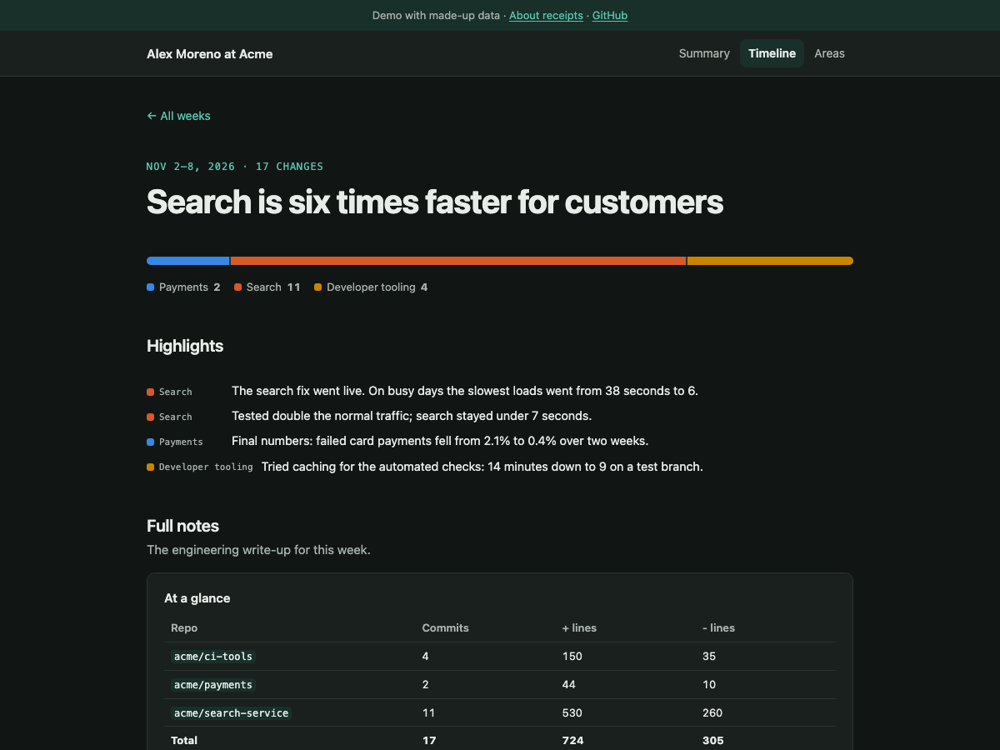

Proof of what you shipped.
Once a week, Claude Code reads your git history and your sessions, then writes up what you shipped, with dates, commit hashes, PRs and measured results. Use it for performance reviews, promotion packets and 1:1s.
Built on what you already run
There's nothing to sign up for and no database to run. It's a folder of Markdown, JSON and three Python scripts.
Three steps from commit to review
Everything that can be counted runs as a plain script. Claude only writes the prose.
$ ./scripts/run-weekly.sh --no-ai weekly/2026-11-16_to_2026-11-23.md: draft, 10 commits, 4 sessions share/data.js: 6 weeks, 6 notes drafts ready; run /weekly-update to write them up # the draft already holds the counted facts: # commits and +/- lines per repo, PRs, ticket keys, # sessions with branches and test results, # last week's open items
weekly/2026-11-02_to_2026-11-09.md
| Repo | Commits | + lines | - lines |
|---|---|---|---|
| acme/ci-tools | 4 | 150 | 35 |
| acme/payments | 2 | 44 | 10 |
| acme/search-service | 11 | 530 | 260 |
Search
- 2026-11-04 Measured over 24 h in production: p95 38 s → 6 s. SRCH-88 closed.
- 2026-11-05
0f9e2d1Removed the old query path, -180 lines (#263). - 2026-11-06
c3a7b88Load test at 2x peak traffic: p95 stays under 7 s.

Four records, one folder
The engineering detail for you, plain language for everyone else, all from the same evidence.
A note for every week
Commits per repo, lines changed, PRs, tickets and test counts, then dated bullets per project and open items carried forward. Drafts pile up safely; the next write-up clears them oldest first.
A file for every project
Grows week by week: what it is, your role, timeline, decisions and outcomes. When review season comes, the promotion packet is mostly copy and paste.
Pages for your manager
Headline numbers, measured before-and-after results, where the effort went and what needs a decision. They leave out commit hashes and jargon. Printing a page gives a clean one-pager.
Private by default
Nothing is uploaded. Passwords, tokens, keys, private IPs and connection strings are redacted from the collected evidence, and only your own commits and sessions are credited.
Results you can point to
The share pages lead with measured before-and-after numbers, each one recorded in a dated weekly note.
A missing database index, found and added. Measured over 24 hours in production.
Temporary bank declines now retried automatically. Measured over two weeks.
Tests split across four machines, setup cached. Median over 120 changes.
From the demo · made-up data
Set up once, then it runs weekly
Create a private copy from the template, say who you are, run it.
# who you are, which repos count as work $ $EDITOR config.json # collect + facts-only draft (no AI) $ ./scripts/run-weekly.sh --no-ai # write it up $ claude "/weekly-update" # the pages for your manager $ open share/index.html
Ship the work.
Keep the receipts.
Stop rebuilding last quarter from memory the night before your review.